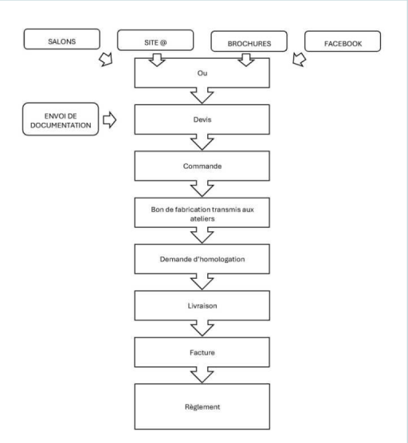

Société Hexa
Historique et activité
La société HEXA existe depuis 1932. D’abord spécialisée dans la confection de toiles de tentes, la société s’oriente ensuite sur le secteur du camping. Cette SARL, d’un effectif de 48 salariés, est dirigée par Olivier Pradelles.
Dans les années 60, la société HEXA crée la tente de réception à armature métallique, et se concentre sur le secteur de la location : elle a donc été la première à lancer ce produit maintenant généralisé sur le marché.
A la fin des années 80, le gérant crée une filiale BRAULENE qui est la première société à installer des bungalows en toile sur les terrains campings. Depuis 1999, l’activité de BRAULENE a été étendue à la location de chalets de Noël totalement modulables.
Inspirateur de la tente de réception à armature tubulaire, des tentes de camping collectivité et également des pistes de luge en synthétique, le dirigeant souhaite être en mesure de proposer des innovations à sa clientèle
Grâce aux savoir-faire de ses équipes, HEXA est en mesure de s’adapter à des évènements totalement divers tels que brocantes, foires, campings, marchés de Noël, réceptions, galas, inaugurations, mariages, meetings, manifestations sportives, et bien d’autres…
Pour répondre à ces différents événements, le dirigeant a développé une gamme de tentes fabriquées dans les locaux de Méré. Les tentes fabriquées sont proposées à la vente ou à la location.
Parallèlement, le dirigeant a également opté pour une offre complémentaire en proposant de la décoration éphémère, avec toute une panoplie de services à la clientèle : mise en ambiance de tentes et salles, housses de chaise, nappes, bougeoirs, lustres… mais également du mobilier, plancher, piste de danse, chauffage, éclairage, tribunes, gradins, podiums, drapeaux…
Olivier Pradelles met en avant le professionnalisme et la réactivité de ses équipes. Elles assurent un accompagnement personnalisé du client.
Hexa intervient sur le marché de la location d’articles de loisirs, mais son activité est étroitement liée au marché de l’évènementiel.
Chiffre d’affaires
Son chiffre d’affaires est en progression constante. L’activité de l’entreprise connait une saisonnalité des ventes.
Fortement implantée sur son marché local, Yvelines et Ile de France, l’entreprise vend et loue ses produits également sur toute la France.
La concurrence
Malgré sa position parmi les leaders de loueurs, vendeurs et fabricants de tentes, HEXA doit lutter contre de nombreux concurrents.
En effet, HEXA compte 2690 concurrents en France dont 24 dans les Yvelines. (Source : Manageo)
Ces concurrents se divisent en deux catégories.
On distingue, d’une part, les concurrents «100%», ceux qui font exactement la même activité qu’HEXA, tels que Plisson, France Barnum, Cabanon ou encore MainBâche. Ces derniers sont présents sur les mêmes appels d’offres, les entreprises se disputent donc les clients ; et d’autre part, les «50%», ceux qui vendent des tentes, barnum … comme HEXA, tels que C2M Chapiteaux ou Inten24, mais ils ne les fabriquent pas.
La clientèle
HEXA compte une clientèle inégalement répartie entre professionnels (BtoB) et particuliers (BtoC).
La clientèle « professionnelle » est constituée de collectivités territoriales (mairies, conseils généraux…) qui représentent environ 70% du CA de la catégorie « pro », d’agences de communication « évènementiel » pour lesquels Hexa intervient en sous-traitants (environ 20% du CA « pro »), de musées, de traiteurs qui se répartissent les 10% restants.
Processus de vente

L’organisation commerciale
HEXA suit une organisation commerciale simple composée d’une responsable commerciale (Céline) et de 3 commerciaux (Sophie, Françoise et Edouard).
Ces quatre personnes prennent les appels entrants et reçoivent sur leurs boites e-mail les demandes de devis provenant du site web. En revanche, la recherche de clients par prospection n’est pas encore mise en place au sein du service commercial.
Chacun est responsable de son dossier du début à la fin : de l’information/conseil au client, devis, suivi des ventes et des livraisons, facturation et relance pour impayés si besoin.
Votre mission
Vous êtes stagiaire au sein de l’entreprise Hexa, et plus particulièrement du service commercial. Le dirigeant vous confie pour mission :
Une opération de prospection et son organisation ;
La préparation d’une réponse à l’appel d’offres de la mairie de Houdan.
Situation 1 - Analyser le contexte
A votre arrivée dans l’entreprise, vous êtes accueilli(e) par votre tuteur. Il vous présente vos collègues de travail et les locaux de l’entreprise. Il vous explique rapidement l’histoire de l’entreprise et vous remet un certain nombre de documents qui vous permettront de comprendre le fonctionnement d’HEXA.
A partir des ressources fournies, dont «données CA Hexa», répondez aux questions suivantes, en traitant les données mises à votre disposition.